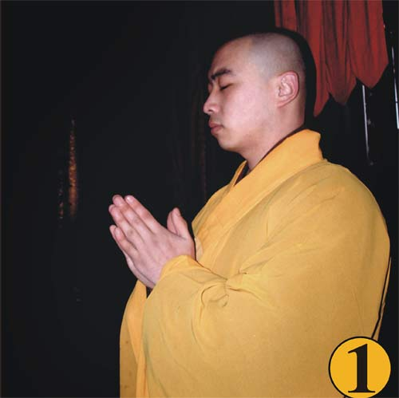
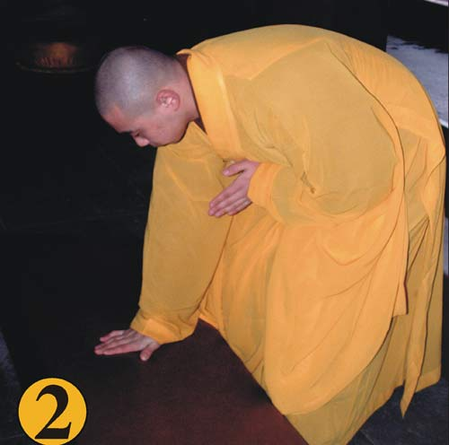
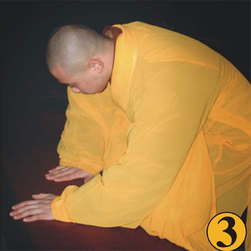
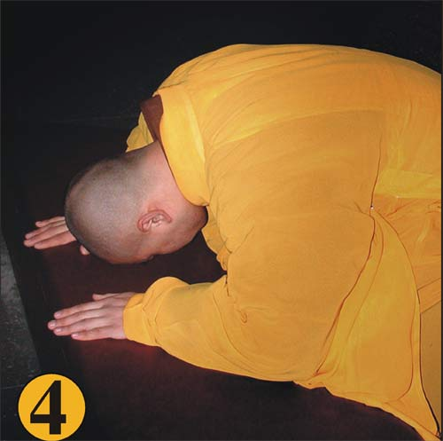
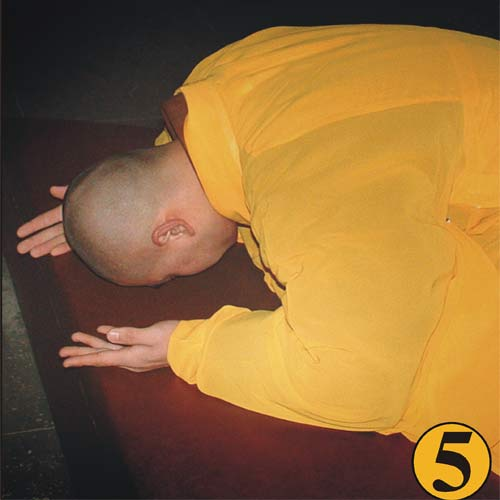
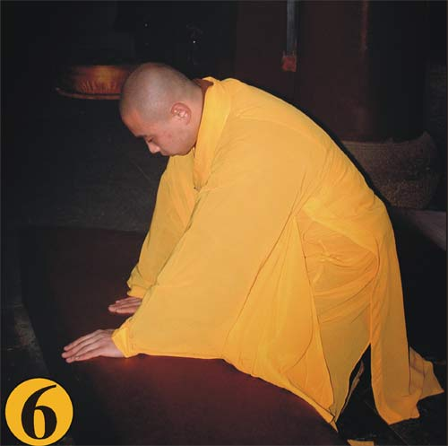
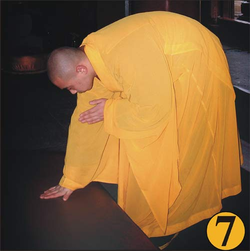
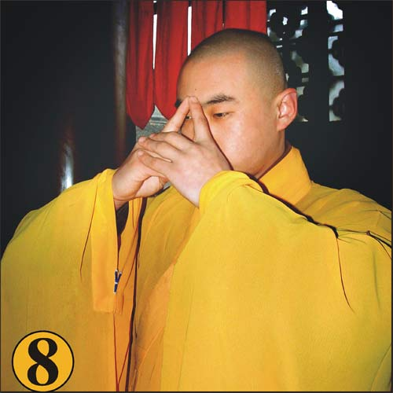

第一．站立姿势．轻轻合起双掌，手指并拢，手肘自然弯曲，置于胸前约呈四十五度。合双掌时，双眼下垂目光注视合掌的指尖，能够凝聚心神，排除妄念．站于蒲团之前，两足作八字式，左右足 跟距离约二寸左右，足尖距离约八寸；

第二．分右掌向下，按于蒲团之中心，左掌不动，两膝跨开，跪于蒲团上；

第三．左掌按于蒲团之前左边；

第四．右掌从中心移于蒲团之前右边，两掌相离六寸许；以头按于两掌中间之蒲团上；

第五．以两手掌向外边翻转(手心向上，意在以两手承佛足，头面接足礼)；

第六．两手曲指反转，仍按于蒲团之原处；头离蒲团由伏而起；右掌移于蒲团之中心；

第七．左掌离蒲团，置于胸前如合掌之状；右掌用力撑起(两膝同时离蒲团)，合于左掌当胸，此为一拜；

附＜问讯＞ 拜毕后尚有一礼，如世俗之作揖，名曰问讯
1、首先虔诚地合起双掌，目光注视中指指尖。
2、然后向下弯腰约九十度，当要直起身子来时，合十的双手也同时变换姿势。
3、以左手的中指、无名指、小指，盖住右手的中指、无名指、小指；大拇指指尖轻轻相接触，食指尖也轻轻相接触，食指与大拇指刚好略呈三角形状。
4、此时，双手的姿势就像一朵含苞待放的荷花，就如同向佛菩萨供花一般，充满了恭敬祥和。
5、双手维持这个姿势经过胸前，一直举高到眉心(但不触到额头)，这也表示把佛菩萨供到顶上，有著虔诚、恭敬而谦虚的态度。
6、随后再轻轻将手放下，到胸前回复合十姿势，然后放下双掌。
